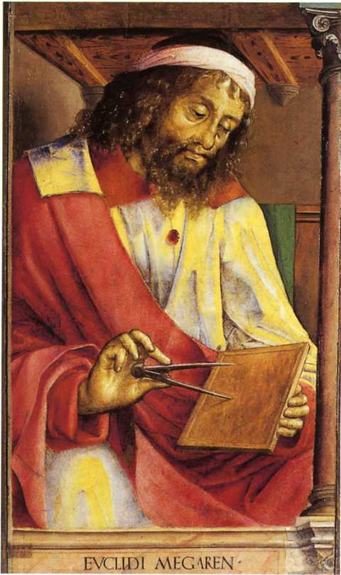
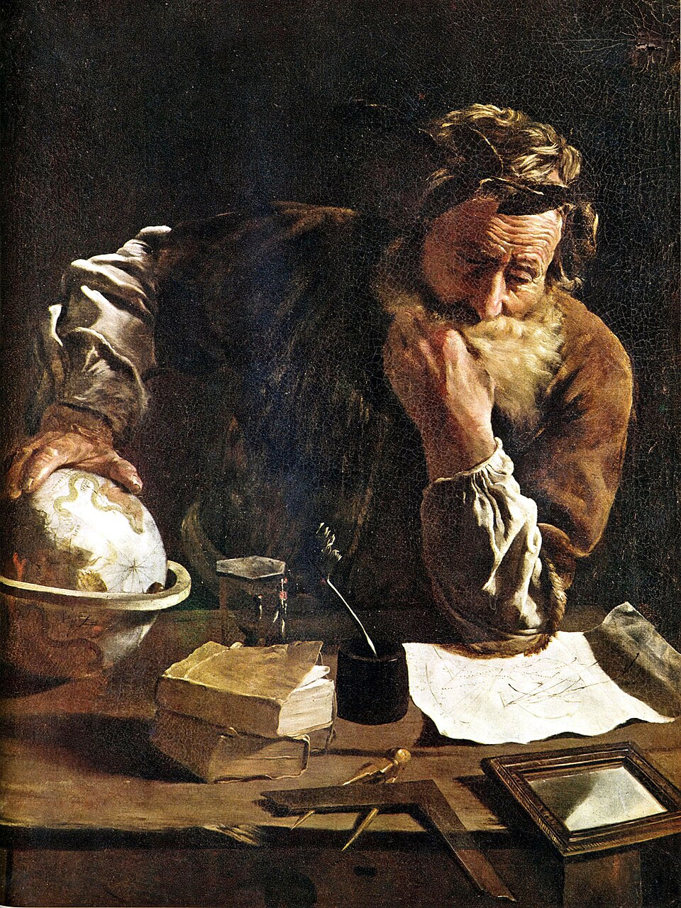
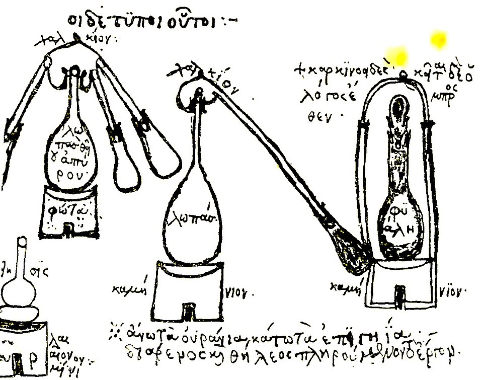
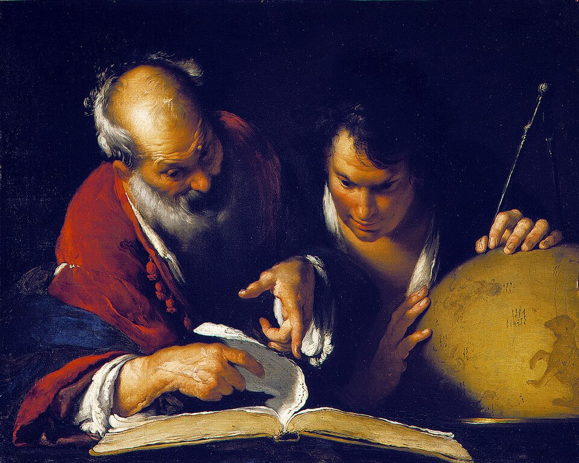
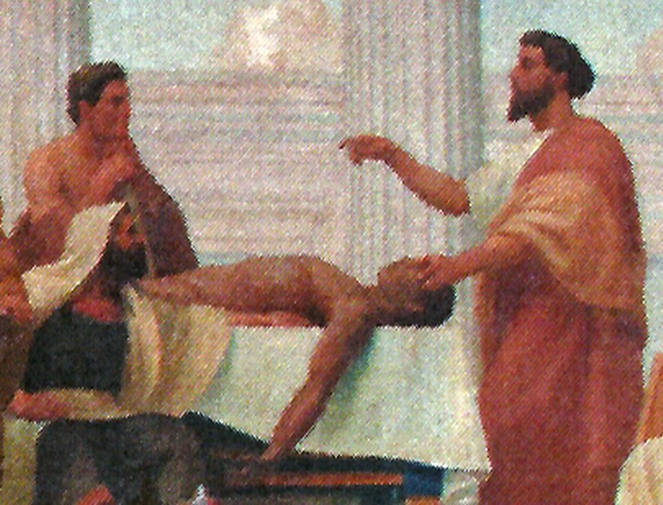
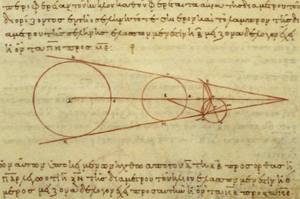
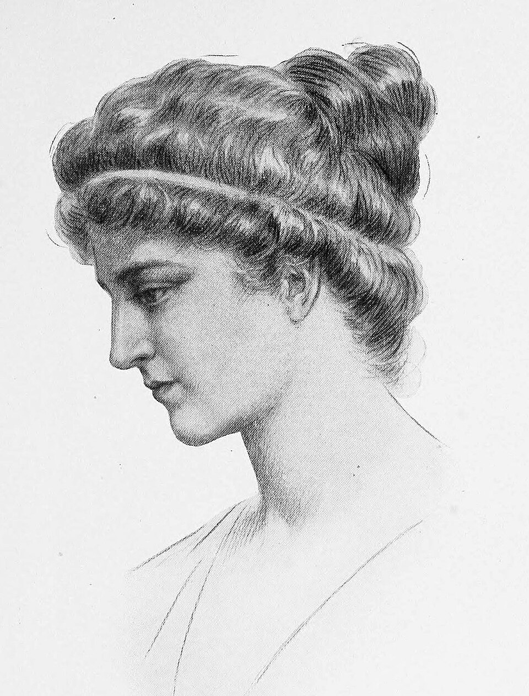

bktOpen I.1
bktOpen I.1The polymaths of Alexandria
Seven branches, seven doors
Each branch of the canon opens on a polymath of the Alexandrian tradition. Their texts sit beside the axioms they set down.

Euclid, Studiolo of Federico da Montefeltro, Justus van Gent and Pedro Berruguete, Public domain 01 · Mathematics
Euclid
Elements, c. 300 BC
Read the source
Archimedes Thoughtful, Domenico Fetti, Public domain 02 · Physics
Archimedes
On Floating Bodies
Read the source
Distillation apparatus of Zosimos, Byzantine Greek manuscript, after Berthelot 1887, Public domain 03 · Chemistry
Zosimos of Panopolis
Cheirokmeta
Read the source
Eratosthenes Teaching in Alexandria, Bernardo Strozzi, Public domain 04 · Information
Eratosthenes
the sieve of primes
Read the source
Herophilos, Veloso Salgado, Public domain 05 · Biophysics
Herophilus
the pulse and the nerves
Read the source
Aristarchus, On the Sizes and Distances, Greek copy of the lunar diagram, Aristarchus of Samos, 10th century manuscript, Public domain 06 · Cosmology
Aristarchus
On the Sizes and Distances
Read the source
Hypatia, Jules Maurice Gaspard, in Elbert Hubbard, Little Journeys, 1908, Public domain 07 · Mind
Hypatia
commentary on Diophantus
Read the source
_-_Studiolo_di_Federico_da_Montefeltro.jpg){kind=link}


.jpg){kind=link}
_-_Veloso_Salgado.png){kind=link}